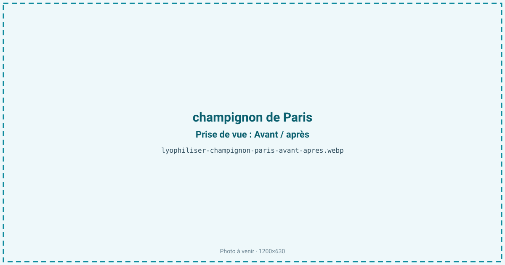
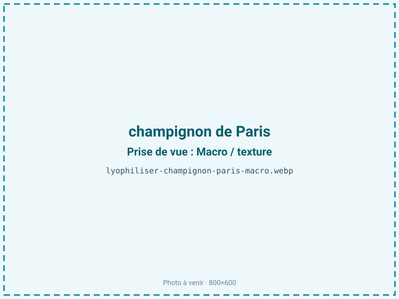
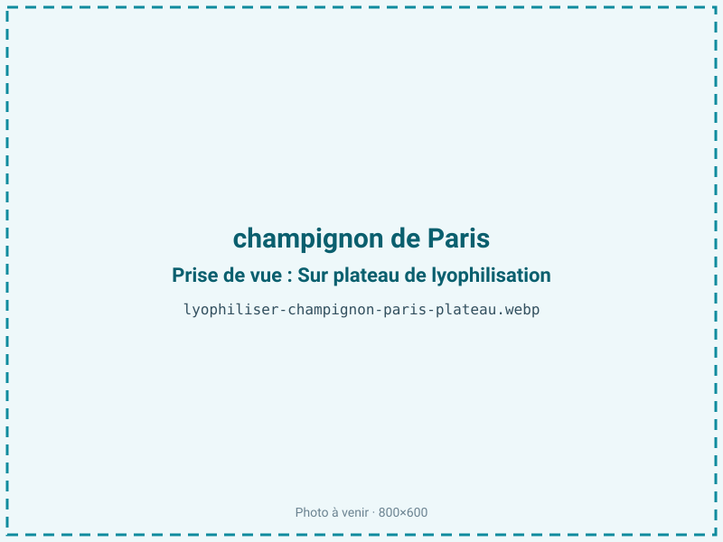
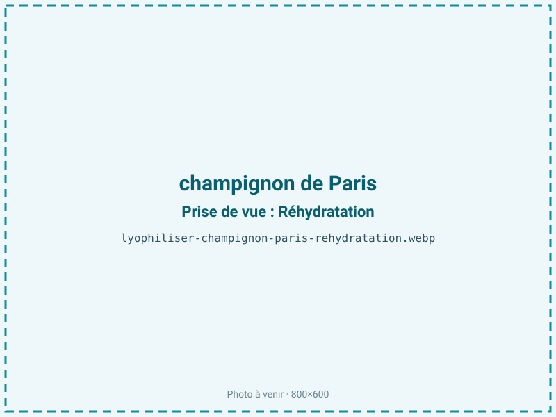

Lyophiliser des champignons de Paris
Le champignon de Paris noircit et s'affaisse en quelques jours, perdant l'essentiel de son poids à la cuisson. Lyophilisé, il se réhydrate presque à l'identique et concentre son umami, offrant un ingrédient stable pour sauces, risottos et poudres, sans le brunissement du séchage à chaud.

En bref
Comment champignon de Paris se comporte à la lyophilisation
Le champignon de Paris contient environ 90 % d'eau et une paroi cellulaire de chitine (et non de cellulose comme les végétaux), qui lui donne sa tenue et facilite une réhydratation proche du frais. Son goût repose sur le glutamate et des nucléotides (umami), et il est pauvre en sucres. Son point faible est la tyrosinase, une polyphénoloxydase très active : dès la coupe ou le choc, elle brunit la chair en quelques minutes, d'où la nécessité de traiter des champignons frais et sains.
À la congélation, l'eau cristallise dans une chair spongieuse et gorgée d'eau ; à la sublimation, le front traverse une structure poreuse en laissant un réseau qui se regonfle bien à l'eau. La chair claire et le chapeau se comportent différemment des lamelles, plus fines et plus foncées. L'absence de sucres écarte le risque de collapse, contrairement aux fruits.
Paramètres de cycle
Nettoyer à sec ou très brièvement, parer et trancher régulièrement en lamelles de 4 à 6 mm ; travailler vite pour devancer le brunissement enzymatique. Un traitement de champignons très frais est la meilleure garantie de couleur claire.
Congeler à −30 °C. Étant peu sucré, le champignon tolère en primaire une clayette assez franche sans risque de collapse, ce qui raccourcit le cycle par rapport à un fruit sucré. Le champignon étant un produit maigre sans lipides à protéger, on vise une aw basse de 0,20 à 0,30 : descendre est favorable à la stabilité et à la conservation. Critère d'arrêt : une lamelle légère et cassante, aw inférieure ou égale à 0,30.
Pièges connus
- Brunissement rapide : traiter frais.
- Trancher régulièrement.



Variantes & provenance
La couleur du champignon change le rendu : le blanc donne le produit le plus clair et le plus vendeur, le blond (crème) un résultat un peu plus foncé et plus parfumé. La fraîcheur est décisive — un champignon déjà ouvert ou noirci brunira davantage et donnera un produit terne. Le calibre joue sur le temps de séchage : un gros chapeau charnu met plus de temps qu'un petit bouton, à couche égale. Entier, tranché, en dés ou en poudre, le procédé s'ajuste ; la lamelle se réhydrate le mieux, la poudre concentre l'umami pour l'assaisonnement.
Conservation & DLUO
Le champignon de Paris est un produit maigre : son facteur limitant est la reprise d'humidité, la lamelle sèche étant hygroscopique et se ramollissant vite à l'air. Une aw basse lui est donc favorable, sans risque de rancissement. À la marge, un brunissement non enzymatique peut apparaître si l'aw et la température remontent au stockage. Comptez 12 à 24 mois en sachet barrière à température ambiante. Le conditionnement barrière préserve à la fois le croquant sec et la capacité de réhydratation, principal atout du produit ; un stockage au sec et au frais limite tout jaunissement de la chair claire.
12 à 24 mois en sachet barrière.
Estimez selon votre emballage :
Face aux autres procédés de séchage
Au séchage à l'air chaud, le champignon brunit, se ratatine et perd sa capacité à se réhydrater : la chair devient coriace et prend un goût cuit, adapté au champignon sec de cuisine mais loin du frais. Le micro-ondes sous vide sèche plus vite pour un coût moindre mais réhydrate moins fidèlement et fonce davantage la chair. La lyophilisation conserve le mieux la couleur claire, l'umami et une texture qui regonfle presque comme le frais grâce à la paroi de chitine — c'est son atout décisif pour les sauces et risottos instantanés.
Marchés & applications
Poudre umami pour bouillons, sauces et assaisonnements, lamelles réhydratables pour risottos, poêlées et plats déshydratés, inclusions dans des préparations culinaires et des mélanges secs. Les acheteurs types sont les industriels de la sauce et du plat préparé, les fabricants de rations et de plats de randonnée, et la restauration.
- Poudre umami
- Sauces et risottos instantanés
Questions fréquentes — champignon de Paris
Le champignon lyophilisé se réhydrate-t-il bien ?
Oui, presque à l'identique : sa paroi de chitine lui permet de regonfler dans l'eau chaude en retrouvant texture et volume, mieux que la plupart des légumes.
Pourquoi noircit-il avant séchage ?
À cause de la tyrosinase, une enzyme très active dès la coupe. Traiter des champignons très frais et travailler vite garde la chair claire.
Faut-il le laver à grande eau ?
Non : le champignon absorbe l'eau comme une éponge. Un nettoyage à sec ou très bref est préférable avant traitement.
Quel est le rendement ?
Environ 10:1, soit 1 kg de champignons frais pour 100 g de produit sec, car ils contiennent 90 % d'eau.
Concentre-t-il l'umami ?
Oui : le glutamate et les nucléotides responsables du goût umami se retrouvent dans une masse plus faible, ce qui intensifie la saveur, surtout en poudre.
Blanc ou blond ?
Le blanc donne le produit le plus clair et régulier ; le blond est un peu plus foncé et plus parfumé. Les deux se lyophilisent.
Entier ou tranché ?
La lamelle de 4 à 6 mm sèche vite et se réhydrate le mieux ; l'entier est possible mais plus long. La poudre sert à l'assaisonnement.
Prochaine étape : envoyez-nous 200 g
Vous avez les repères du champignon de Paris. La suite logique : nous envoyer un échantillon et repartir avec une fiche technique sur votre produit — rendement, aw finale, coût au kilo.
Tester du champignon de Paris — 250 à 500 €Déductible de votre premier lot.